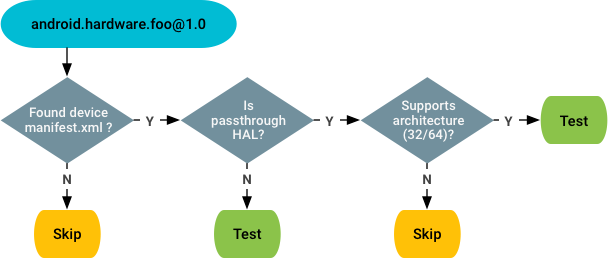
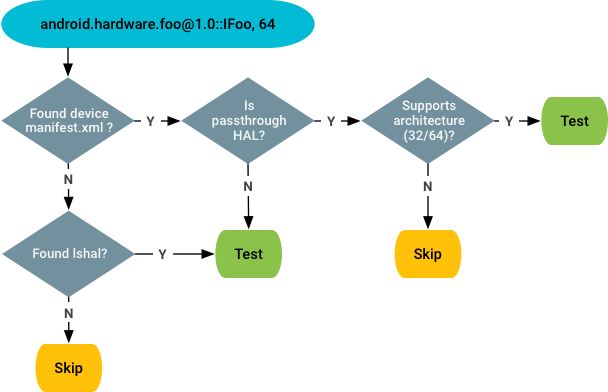

The Android {{ androidPVersionNumber }} Vendor Test Suite (VTS) supports a runtime method for using the device configuration to identify which VTS tests should be skipped for that device target.
As of Android 8.0, VTS tests are required for all devices launched with Android 8.0 and higher. However, not all VTS tests apply to all device targets. For example:
VTS includes the following test types:
Whether a test is a compliance test or not depends on which plan it belongs to. Tests that run with VTS plan are considered compliance tests.
VTS can use the following files to determine if the device target supports a specific HAL:
/system/compatibility_matrix.xml. Claims the HAL instances
required by the framework. Example:
<hal format="hidl" optional="true">
<name>android.hardware.vibrator</name>
<version>1.0-1</version>
<interface>
<name>IVibrator</name>
<instance>default</instance>
</interface>
</hal>
optional attribute indicates if the HAL is strictly
required by the framework.version configurations for
the same entry, indicating the framework can work with different versions.
version1.0-1 means the framework can work with the lowest
version 1.0, and does not require a version higher than 1.1.manifest.xml. Claims the HAL instances provided by the
vendor. Example:
<hal format="hidl">
<name>android.hardware.vibrator</name>
<transport>hwbinder</transport>
<version>1.2</version>
<interface>
<name>IVibrator</name>
<instance>default</instance>
</interface>
</hal>
version configuration
for an entry, version1.2 means the vendor supports all versions
from 1.0~1.2.hwservicemanager. Example:
android.hardware.vibrator@1.0::IVibrator/default
lshal also shows all the HALs that with passthrough
implementations (i.e having the corresponding -impl.so file on
the device). Example:
android.hardware.nfc@1.0::I*/* (/vendor/lib/hw/) android.hardware.nfc@1.0::I*/* (/vendor/lib64/hw/)
For compliance tests, VTS relies on the vendor manifest to determine (and test) all HAL instances provided by the device. Decision flow:

For non-compliance tests, VTS relies on the vendor manifest and
lshal outputs to determine (and test) the experimental HALs not
claimed in the manifest.xml file. Decision flow:

VTS checks for the vendor manifest.xml file in the following
places in the following order:
/vendor/etc/vintf/manifest.xml + ODM manifest (If same HAL
is defined in both places, ODM manifest overrides the one in
/vendor/etc/vintf/manifest.xml)/vendor/etc/vintf/manifest.xmlmanifest.xml file, loaded from the following files in
the following order:
/odm/etc/vintf/manifest_$(ro.boot.product.hardware.sku).xml
/odm/etc/vintf/manifest.xml/odm/etc/manifest_$(ro.boot.product.hardware.sku).xml/odm/etc/manifest.xml/vendor/manifest.xml
The
vts_testibility_checker is a binary packaged with VTS and used by
VTS test framework at runtime to determine whether a given HAL test is
testable or not. It is based on
libvintf
to load and parse the vendor manifest file and implements the decision flow
described in the previous section.
To use vts_testability_check:
vts_testability_check -c -b <bitness> <hal@version>
vts_testability_check -b <bitness> <hal@version>
The output of vts_testability_check uses the following json
format:
{testable: <True/False> Instances: <list of instance names of HAL service>}
To determine which HALs are accessed by VTS tests, ensure that each HAL test
uses the
VtsHalHidlTargetTestEnvBase
template to register the HAL(s) accessed in the test. The VTS testing
framework can then extract the registered HALs when pre-processing the test.
For compliance tests, you can also check
/system/etc/vintf/manifest.xml. If a HAL is defined here, VTS
should test it. (For the HAL services provided by the system (e.g.
graphics.composer/vr), the HALs are declared in
/system/manifest.xml.)